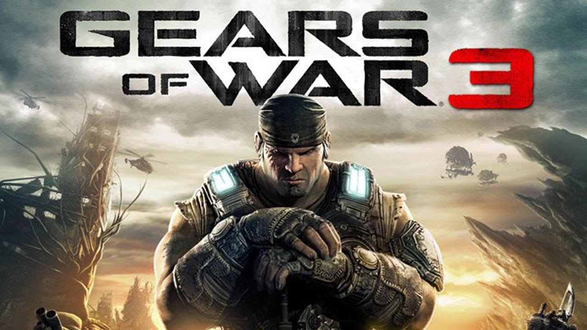

Gears of War es el primer videojuego de la serie Gears of War, mismo que dio inicio a esta última y al universo. Es también el comienzo de la trilogía original. Pertenece al género de disparos en tercera persona, de la categoría acción/horror que además incorpora elementos tácticos.

Gears of War 2 es el segundo videojuego de la Serie Gears of War, siendo, al igual que su predecesor, del género de acción y disparos en tercera persona. Fue desarrollado por Epic Games y distribuido por Microsoft Studios. Su salida mundial fue el 7 de noviembre del 2008, de manera exclusiva para la consola Xbox 360.

Gears of War 3 es el tercer videojuego de la Serie Gears of War, desarrollado por Epic Games y distribuido por Microsoft Studios como exclusiva para la consola Xbox 360 el 20 de septiembre de 2011. Al igual que sus predecesores, se trata de un juego de disparos en tercera persona, basado en un sistema de coberturas.